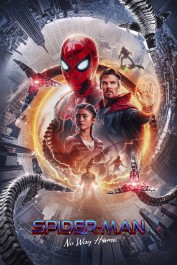

Site
Sound Of Music
Home?

Spider-Man: No Way Home
December 17, 2021
Peter Parker is unmasked and no longer able to separate his regular life from the high-stakes of being a super-hero. When he requests for assistance from Doctor Strange the stakes come to be a lot more hazardous, requiring him to find what it really suggests to be Spider-Man.